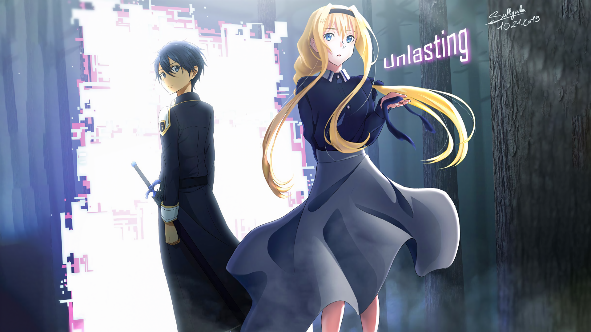

"Assalamualaikum and hai to everyone who visiting my website. Firstly, My Name is Nik Muhammad Muhaimin Nik Abdul Aziz and I am 20 years old.I am currently studied at UiTM Campus Rembau which the course is Information Management. At first, I thought the course is more like managing the information since the name of the course itself shows managing information but it more to the library science which teach us the library management in how to do the cataloging, access the information and many more. To be honest, it is quiet good and fun because I can learn new things as well as I can improve my knowledge about the course. Furthermore, I created this website for assignment purpose which more to the personal portfolio about myself. In this website, I do not have included anything much but it is more to my personal portfolio which include my biodata, gallery, contact and more. Indeed it is quiet tough task to do but this give me something to explore and discover more in how to create website"
Name: Nik Muhammad Muhaimin Bin Nik Abdul Aziz
Age: 20 years old
Date of Birth: 26 July 2000
Place of Birth: Gombak, Selangor
Tel. No.: 019-6856153
Citizenship: Malaysia
Religion: Islam
Studied: UiTM Rembau Campus

Sword Art Online Alicization War of Underwold Kimi no na wa One Punch Man